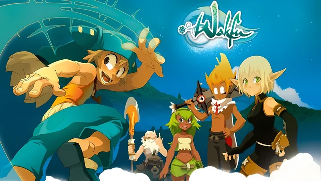

Ankama is a French company created in 2001 in Roubaix. Initially, it mainly focused on web development and web design.
The History of Ankama
Creation

Dofus

In 2004, Ankama released Dofus, its first major video game. The game quickly enjoyed great success and became the flagship symbol of the company.
Development

Following Dofus, Ankama developed other projects, such as Wakfu, manga, and animated series. The company built an entire universe around its games.
Diversification

Ankama expanded into several fields: video games, publishing, animation, and merchandise. This allowed the company to reach a broader audience.